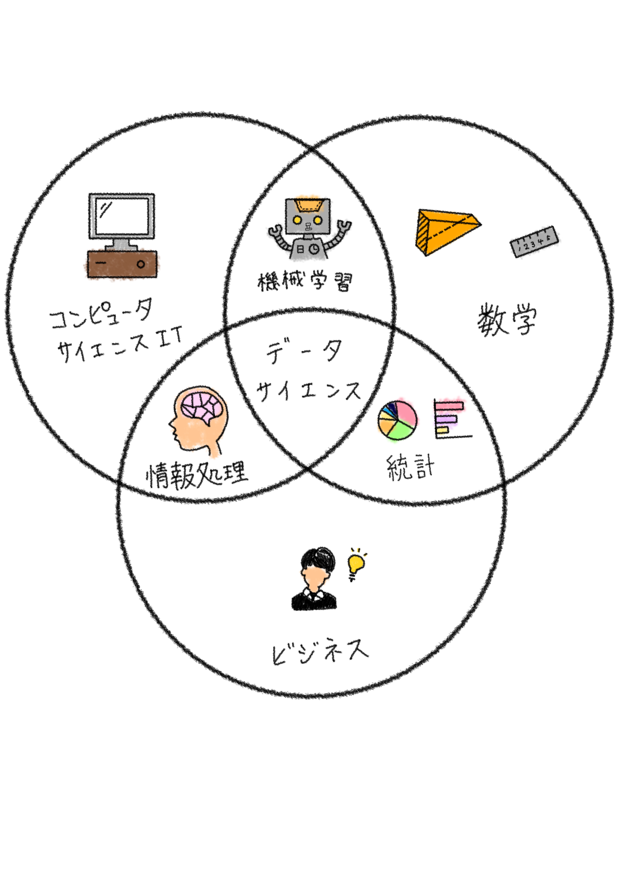
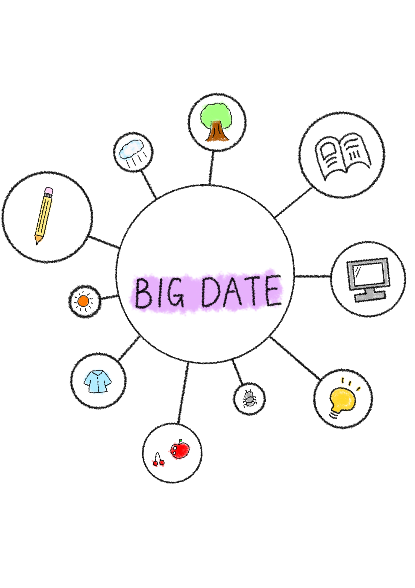

| 名前 | 年齢 | 特技 | 趣味 | 大学生活 | 将来 |
|---|---|---|---|---|---|
| 横山 香寿美 | 18 | テトリス | 音楽を聴きながらゲーム | 勉強、研究生活 | 高校教員 |

情報学科の興味のある分野
データサイエンス・ビッグデータ
データサイエンスとは
膨大なデータから有益な情報や知見を引き出す学問。
例：交通情報からの渋滞予測、医療分野での診断支援など。
ビッグデータとは
従来のデータベースでは扱いきれないほど大量のデータ。
例：SNS投稿、Webアクセスログ、センサーデータなど。

